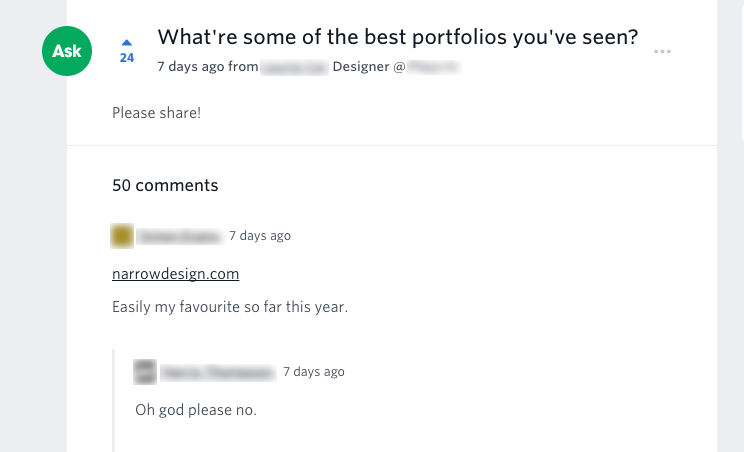

【翻译Medium之三】在线设计作品集究竟扮演着何种角色？
也可以叫“在不了解设计师的目的之前不要轻易评价他们的作品集”
by Fabricio Teixeira
on Jul 24, 2017
翻译：张瑞
原文链接：科学上网
设计作品集应该是什么样子？是越直接且仅关注在作品上越好，还是应该作为一种艺术品来展示设计师的能力和品位？这在一开始就是个两难的问题。
某天我在浏览我的feeds的时候我提出了下面的问题：

如果你对上面的讨论里分享的作品集不熟悉的话，这里有个截图可以给你更多的提示，这里还有个链接可以让你自己体验：

你可能猜到接下来发生的事情了：针对可用性还是创造性、形式还是功能、性能还是外观、对比还是易读、共和党还是民主党、选我还是选你的一场热烈而漫长的讨论。
但是那就是网上大部分讨论的样子：他们很快就会两极化，并且思想极端的人对于他们认为对错的东西非常坚持。不要误解我的意思了：参与这场讨论的人并不是要责备的对象。事实是像上面一样的短期的网上讨论在理解设计决定的复杂性这个方面上，只能讨论到这个深度了。
在浏览这个问题下所有的评论时，我开始想到了别的事情。我无法避免地扪心自问：“那么，在线设计作品集究竟扮演着何种角色？”参与到这场讨论的人们如果没有在作品集的目的上达成统一的观点，他们是不可能从中得出任何有用的结论的。
所以我们来做一些我经常做并且很喜欢的事情吧：把问题分解成一个个小的部分，直到它们变得更容易解答。
问题一：设计师的作品集的目的是什么？
第一步是试着找出可以定义作品集目的的所有可能角度：
- 是为了展示设计师工作过的项目的最终产出物吗？如果是这样，那么作品集本身的设计就应该越简单越好，应该关注内容而不是形式。如果你在期待的是具有视觉冲击力的制作精良的效果图，那是像cargocollective，Behance，squarespace一样的设计平台才应该关注的东西。
- 是为了阐释设计师的思考过程吗？这样的话，项目页应该包含更多的文字、幕后的可交付产品以及详细的解释。
- 是它本身就是一件艺术品来展示设计师的品位吗？这样的情况下，作品集本身就是设计师的一种来展示他们的设计能力和品味的方式，也就不会有客户要求的项目里通常有的那些限制了。这些作品集用一种最纯粹的方式，向周围人展示了设计师对于优良设计的看法。在上面提到的例子里，narrowdesign.com,这个作品集主页就是用来展示这位设计师关于设计理论的知识（黄金分割法则）、对于动效设计的能力、对于配色的品位——等等之类。
上面的选项并不是互不相容的。一些人可能会说“（我的目的是）以上全部”，但是有一个明确的重点可以帮助你的作品集更快地取得想要的效果。为了真正理解你的作品集应该关注上面三个方面中的哪一个，你不得不问你自己另一个问题。
问题二：设计师的目的是什么？
- 是为了将他们过去的作品文档化吗？一些人一直在更新他们的作品集仅仅因为他们不想忘记他们工作过的项目。这是毫无疑问的：他们仅仅是期望建立一个过去项目的仓库以便他们未来可以用来参考。像一个回忆录一样。
- 是为了找到新工作吗？设计师是否在积极寻找新工作呢？如果是这样，他们想要加入哪种公司呢？是设计工作室？代理机构？商业咨询公司？偏向客户的？还是注重产品的？HR和项目经理会寻找什么样的项目？
- 是想被看做某个特定领域的大牛吗？一些人重设计了他们的作品集网站，是为了以一种和过去略有不同的方式来更专业地展示他们的能力。就像那句老话说的：“把你想做的作品放到作品集里，而不是你认为其他人想要看到的那些作品。”这可能就是一些设计师的目的，还要取决于他们在职业生涯的哪个阶段。
非常简单，不是吗？
并不全然。在评价某个作品集的时候，还有一个问题需要纳入考虑……
问题三：设计师想要被其他人怎么看待？
这个问题涉及到确定一个想要深入研究的设计领域，以及这个设计师想要被正在浏览他们作品集的对手们或可能的上司们如何看待。虽然展示你跨越多个设计专业的能力很重要，但通过一个人的价值主张，设计师可以把重点放在正确的地方。
你想要参观者在关闭你的网站时留下什么印象？
“哇，这个人是一个非常【】的【】！”
一些例子：
- 哇，这个人是一个非常了解数字媒体的平面设计师！
- 哇，这个人是一个非常看重动效的界面设计师！
- 哇，这个人是一个非常了解设计和交互的前端工程师！
- 哇，这个人是一个有多年设计名片经验的平面设计师！
- 哇，这个人是一个非常专注于广告设计的创意领导者！
思考这种【约束】+【专业领域】的构造是一个保持你的作品集与众不同的好方法。这样可以给参观者留下一个清晰的印象——一旦他们离开你的网站可以更容易想起你。
然而，想要那么简单的定义你自己也不是很容易。
我了解的一些设计师可以很清晰的定义他们是谁和他们想要如何被看待，但是还有一些需要一点帮助……

如果这些问题都得到回答了，你就可以开始设想一个作品集应该是什么样子，应该展示什么内容，重点应该是什么。
也只有那样，你才可以判断一个作品集是否可以达到他们的目标。